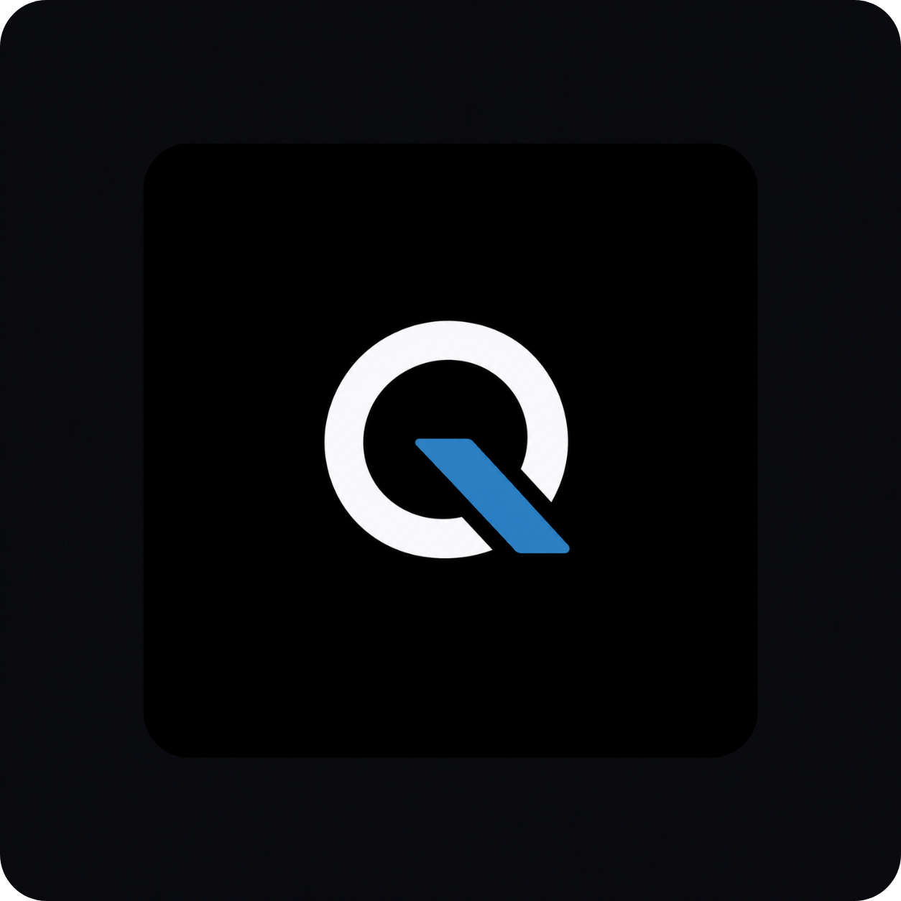

01
Web
Modern business websites, landing pages and custom web platforms.
Fast • Responsive • Clean
Frontend + Backend

We build polished websites, apps, AI automation systems and AI vision solutions with clean design, strong performance and smooth interactions.
Interactive service cubes designed like animated dice — each one representing a core part of the studio's core offer.
Modern business websites, landing pages and custom web platforms.
User-friendly product interfaces and scalable app experiences.
Automated workflows, assistants and smart systems that reduce manual work.
Image intelligence, visual detection and computer vision solutions for real tasks.
Example directions for the kind of digital experiences we can design and build for modern software teams.
Command-center experience for teams orchestrating AI workflows, approvals and automations.
A calm CRM concept that turns activity, pipeline and customer signals into one readable view.
Developer-facing infrastructure interface with quick observability, deployments and system status.
$ deploy quiet-logic --prod
✓ build complete
✓ checks passed
→ live in 2.4s
We combine design clarity with technical depth. The result is a premium visual style, smooth interactions and systems built for real business use.
Need a website, app, AI automation or AI vision solution? Let’s turn the idea into a polished product.